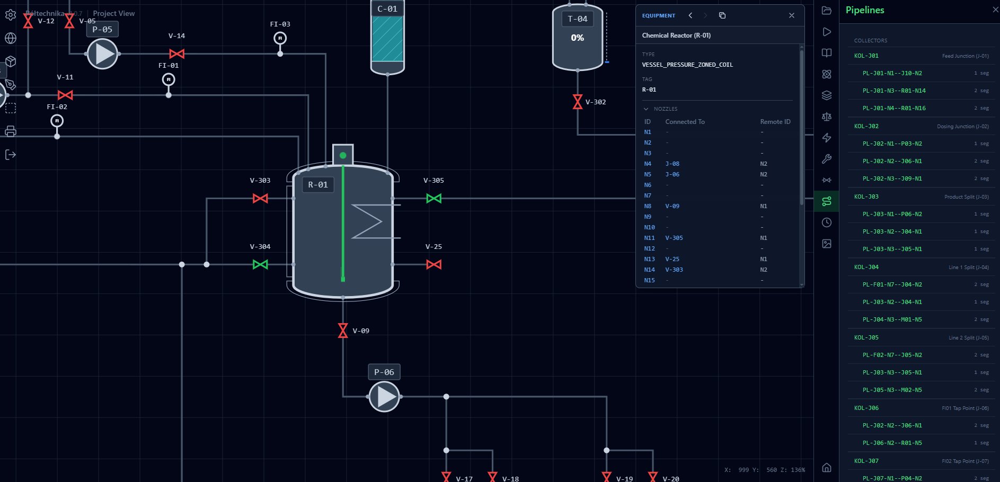
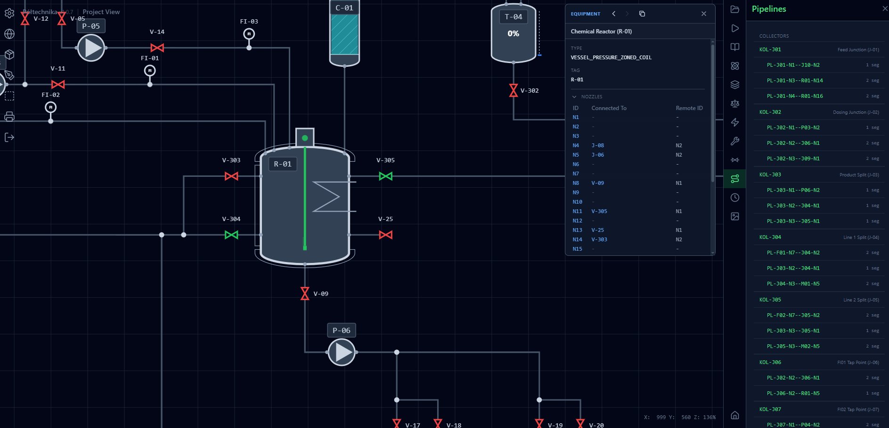

Webowy system SCADA do symulacji i sterowania instalacjami chemicznymi
Uruchom aplikacjęWizualizacja P&ID w czasie rzeczywistym - Interaktywne schematy procesowe i oprzyrządowania z aktualizacjami na żywo
Symulacja fizyczna - Dokładna symulacja dynamiki procesów włącznie z przepływem, poziomami i temperaturami
Sterowanie urządzeniami - Sterowanie zaworami, pompami i reaktorami z intuicyjnym interfejsem
Tryb adnotacji - Dodawanie notatek, oznaczeń i komentarzy bezpośrednio na schemacie P&ID
Zarządzanie rurociągami - Śledzenie i zarządzanie wszystkimi segmentami rurociągów ze szczegółowymi specyfikacjami
Architektura wielodostępna - Wsparcie dla wielu izolowanych symulacji instalacji
Eksport gotowy do druku - Generowanie eksportów rysunków technicznych z prawidłowymi tabliczkami tytułowymi
Aktualizacje w czasie rzeczywistym - Komunikacja oparta na WebSocket dla natychmiastowej synchronizacji stanu
 
